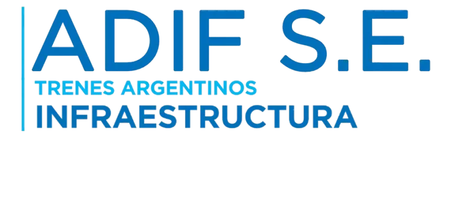
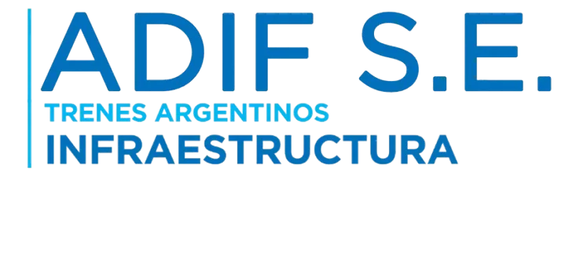
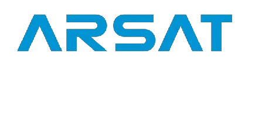
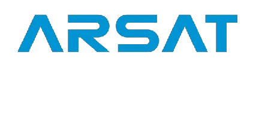

{kind=link}
{kind=link}
{kind=link}
{kind=link}
{kind=link}
{kind=link}
{kind=link}
{kind=link}
Teléfono
011-5272-9000
0810-345-ITTEL (4883)
Somos un grupo de empresas especializadas en telecomunicaciones y tecnología de la información con más de 10 años de experiencia. Nos dedicamos al diseño, implementación y gestión de infraestructura crítica para operadores y empresas, garantizando conectividad de alta disponibilidad.
Proveer soluciones tecnológicas integrales y sostenibles que impulsen la transformación digital de nuestros clientes, garantizando excelencia operativa y soporte 24/7.
Ser el referente líder en infraestructura de telecomunicaciones e IT en Argentina y la región, reconocidos por nuestra innovación, confiabilidad y compromiso con la calidad.
Innovación constante, compromiso con el cliente, trabajo en equipo, responsabilidad ambiental y ética profesional en cada proyecto que emprendemos.
Nuestra experiencia y desarrollos nos permiten ofrecer un servicio diferencial en el mercado.
Diseñamos e implementamos infraestructura de telecomunicaciones end-to-end, desde la fibra óptica hasta servicios gestionados de IT, asegurando alta disponibilidad y rendimiento óptimo para operadores y empresas.
Despliegue y gestión de redes FTTH, backbone y enlaces dedicados.
Acceso compartido a infraestructura de alta capacidad para múltiples operadores.
Operación 24/7 con monitoreo proactivo y gestión de incidentes.
Diseño, construcción y mantenimiento de infraestructura crítica telco.
+ Años de
experiencia
+ Proyectos
de éxito
% de SLA
garantizado
Una selección de nuestros proyectos más importantes. Cada implementación demuestra nuestra experiencia y dedicación en el desarrollo de soluciones tecnológicas de vanguardia.

Gestión integral de infraestructura TELCO de alto desempeño en CABA.

Red de fibra óptica redundante y backbone estratégico CABA - La Plata.


Relevamiento de infraestructura y potencial de desarrollo en trazados ferroviarios.

Sistema complejo de videovigilancia IP con grabación y acceso centralizado.
Infraestructura tecnológica integral con conectividad y monitoreo 24/7.
Trabajamos con las empresas más importantes del sector, brindando soluciones tecnológicas de alta calidad que impulsan su crecimiento y transformación digital. Nuestra cartera de clientes refleja la confianza depositada en nuestros servicios.


 



 


Estamos aquí para ayudarte. Si tienes alguna consulta o necesitas más información sobre nuestros servicios, no dudes en contactarnos.
011-5272-9000
0810-345-ITTEL (4883)